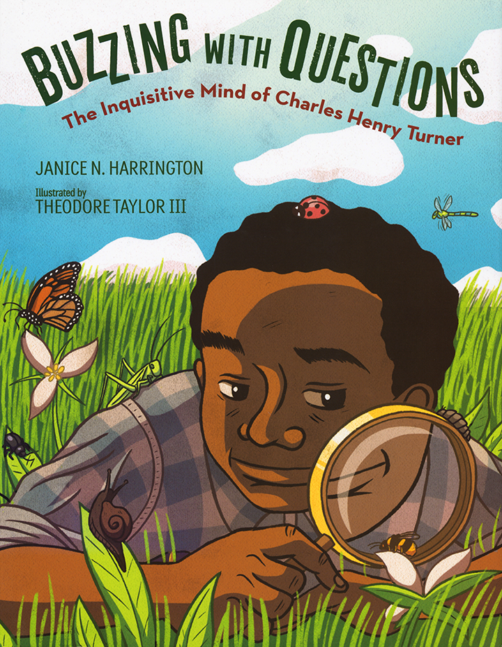

Buzzing with Questions: The Inquisitive Mind of Charles Henry Turner
Author: Janice N. Harrington
Read about Charles Henry Turner, a young boy whose endless questions about insects lead to thoughtful observations, original experiments, and new discoveries—making Turner the first Black entomologist and a pioneer in the field of animal behavior.
“A relatively unknown entomologist comes out of oblivion in this engaging picture book biography. Harrington’s text is inviting, and Turner’s enthusiasm comes through clearly...Taylor’s bright, cheerful, expertly rendered cartoon illustrations complement the text. Harrington and Taylor have rescued a worthy scientist from obscurity.”
—School Library Journal
An NSTA/CBC Best STEM Book
Hooks
Build Background
Before introducing the Big Question, explore the online link below to build background and make connections to the biography. Preview all links and content before sharing with students.
Share the video about Charles Henry Turner’s scientific achievements and his impact on the field of biology and insect behavior. Preview the terms cognition and instinct with students. Clarify that cognition means “having awareness and the ability to learn,” whereas instinct means “a way of behaving that is not learned,” such as cats’ instinct to hunt. Prior to viewing, tell students to listen for two things that made Turner unique among scientists of his time.
Ask: The video includes a college student who is inspired by Charles Henry Turner. What about Turner’s life or work do you find most inspiring and why? (Possible responses: He worked hard and made groundbreaking scientific discoveries, he persevered and succeeded despite racial prejudice, he was creative in using the environment around him to conduct his research.)
Introduce the Big Question
How do questions help us uncover important complexities and connections?
Display the Big Question. Clarify that the question has two parts: How questions help us uncover important complexities and how questions help us uncover important connections. Explain that in Buzzing with Questions, Charles Henry Turner is a curious boy consumed with questions about nature. When he can’t find the answers in books, he decides to find the answers himself. Throughout the lesson, encourage students to think about how Turner’s questions help him embrace complexities in science and make connections—within and beyond science.
Create a chart like the one shown below and display it throughout the lesson. Have students add examples from the text as they read.
How do questions help us uncover important complexities?
How do questions help us uncover important connections?
Mirrors & Windows
Inside-Outside Circle: Uncovering Important Complexities and Connections
Use the activity below to help students explore and share their understandings about how questions help us uncover important complexities and connections.
Display or provide the following statements below. Preview and clarify unknown vocabulary. Have students tell whether they mostly agree or mostly disagree with each statement and why. Students will form two circles—an inner circle and an outer circle—to share ideas.
Statements:
1. All living things are interconnected.
2. Understanding nature helps us understand ourselves.
3. Curiosity drives learning.
4. Understanding complex ideas helps people challenge the status quo*.
5.
*Clarify with students that the term status quo means “mainstream thinking” or “the accepted thoughts and beliefs of a society.”
Allow time for group discussion before facilitating a whole-class discussion. See Activity Support for further instructions.
Author’s Craft
Figurative Language Display the cover and read aloud the title of the text: Buzzing with Questions: The Inquisitive Mind of Charles Henry Turner. Point to the word Buzzing. Ask: What is “buzzing”? What does “buzzing” describe here? (It describes the questions in Turner’s mind.) What does “buzzing” make you think of? (bees; the sound of bees/insects) Why do you think the author uses the word “buzzing” here? (It compares the questions in Turner’s mind to bees or insects buzzing; it helps readers visualize the vivid description.)*
Similes and Metaphors Then explain that the title includes figurative language, or language that goes beyond the literal meaning of the words to create an effect. Two common types of figurative language are similes and metaphors. Similes and metaphors compare two unlike things. Similes use the word like or as to compare, and metaphors compare by suggesting one thing is another thing, without using like or as.
* Note that the title is technically an implied metaphor, or a metaphor where one of the things being compared isn’t explicitly stated.
Sensory Language Remind students of the five senses: sight, sound, touch, taste, and smell. Explain that writers use sensory language to appeal to the readers’ senses and to make descriptions more vivid and memorable.
Clarify that some details include both figurative and sensory language, as in the phrase “buzzing with questions” from the title, which appeals to the sense of sound. Tell students to watch for examples of sensory language throughout the text and to think about how the language helps them visualize the scene.
Sight
Sound
Touch
Taste
Smell
“buzzing”
Summary*
Young Charles Henry Turner was fascinated by the natural world, and questions about insects seemed to demand his attention. There were never enough books to answer his questions, and Turner’s teacher finally told him to go find out the answers himself. Turner embraced complexity, and his deep curiosity guided his studies, leading him from high school to college, even though few colleges accepted African American students at the time. At college, Turner connected with an engaging teacher, Clarence L. Herrick, and his fellow biology students. The other students liked “shy, quiet” Turner and recognized his “indefatigable” work habits. Turner constantly researched, conducted experiments, and asked questions. His questions and research led him to first study spiders and their webs, from dusty windowsills inside, to logs and grassy meadows outside, and anywhere else he could observe them.
Hooks
Build Background
Share the link below to the video about Turner’s scientific achievements as well as some of the barriers he faced as an African American scientist to help students build background. Preview all links and content before sharing with students.
Before sharing this first part of the video about Turner, preview with students the meaning of the terms ecology, neuroscience and stimuli. Prior to viewing, tell students to listen for and list three of Turner’s degrees and/or other scholarly achievements. Then discuss the following questions.
Ask: What were some of Turner’s achievements? (He was first in his high school class; earned his Bachelor’s, Master’s, and PhD; and published many scholarly papers in respected science journals.) How did prejudice impact his life? (He couldn’t get a professorship, which limited his resources, equipment, and staff.) How might prejudice impact scientific advancements in general? (Prejudice limits advancements in science and other fields because it restricts some people with valuable contributions from fully participating.)
Mirrors & Windows
Have students share their thoughts about how Turner’s questions and curiosity help him connect with nature and with other scientists. Use the questions below to help students explore the topic.
In what ways did Turner’s questions help him embrace and uncover complexities in nature? (He realized that not all questions about the natural world have answers in books; often scientists must “go and find out.” His detailed observations helped him find things other scientists may have dismissed or overlooked.)
How did Turner’s questions help him connect with other scientists in important ways? (Despite racial prejudice, Turner was accepted into college and formed close friendships with his white teacher and fellow biology students. The other students “liked the shy, quiet student who always earned high grades.” (p. 9) In the biology class, the students seemed to focus on what they had in common rather than on external differences.)
How might studying nature help people realize how much they have in common with others? (Studying nature gives us perspective. When we study differences among plants and different animal species, we realize that physical differences among people are only superficial. Biologically, we are more alike than different.)
When has a shared interest or curiosity led you to connect with someone who seemed very different from you? Explain.
Write About It!
Journal Display the sentence frames below and have students write about their experiences.
People might think ___________ and I have nothing in common because __________ .
But we connected over our shared curiosity about __________ .
If students need more prompting, you may provide a student exemplar.
Student Exemplar:
“People might think my neighbor Estelle and I have nothing in common because I’m 11 years old and she’s 83 years old. But we connected over our shared curiosity about backyard vegetable gardening.”
Flexible Group Activities
To maximize student performance, use flexible grouping options that best meet your instructional goals and your students’ needs.
Journal Share
Have students share and discuss their journal entries about someone who others might think is very different from them but with whom they formed a connection over a shared interest or curiosity.
Analyze Images
Display pp. 10–13. Have students compare pp. 10–11 to pp. 12–13. Encourage them to consider the scene, who or what the scene focuses on, and what it suggests about Turner’s relationship with nature. Remind students of his teacher’s statement to “go and find out.”
Author’s Craft: Figurative and Sensory Language
Have students work in groups or pairs to identify and sort similes and metaphors and discuss their effect on the text. Directions and resources are included in Activity Support.
Summary
Turner questioned whether spiders were “weaving machines” that made the same web over and over, or whether they could learn and adapt. He conducted detailed observations and experiments, altering spiders’ environments repeatedly and observing how they adapted their webs as a result. He concluded that spiders were complex creatures capable of “intelligent action.” His questions led him to discover a new type of crustacean and later to focus on how ants could find their way home. Turner eventually found work as a biology teacher at Sumner High School, but he never stopped asking questions and always tried to learn more about the natural world. He turned his attention to studying bees in a local park and inspired his biology students with his experiments. He became the first scientist to prove that bees could see color. His questions continued to guide him, leading to new discoveries about moths, ant-lions, caterpillars, and cockroaches, among other insects.
* See About the Book for potential sensitivity issues.
Hooks
Make Connections
Share the video below to help students make contemporary connections to the text and reflect on how Turner’s research on insects’ ability to learn is still relevant today. You may wish to have students read through p. 15 (the section on Turner’s research on spiders) before showing the video. Preview all links and content before sharing with students.
Remind students that Turner made groundbreaking discoveries showing that many insects and spiders are not just driven by instinct but are complex and capable of learning. To support active viewing, tell students to record one similarity and one difference between Turner’s research on spiders and that done by the scientists in the video.
Ask: In what ways does the research at Johns Hopkins build on the ideas in Turner’s research? (It builds on the idea that spiders use their brains to make webs. The Johns Hopkins scientists are studying which brain mechanisms are responsible for the behaviors used to build webs.) How does their research, like Turner’s, show the importance of understanding connections among living things? (The scientists want to apply this knowledge about spiders to learn how human brains implement complex behaviors.)
Mirrors & Windows
After students have read pp. 14–31, have them reflect on how questions about nature continue to help Turner uncover important complexities and connections.
In Chapter 14, all that Omar can think about is his hope to get resettled in America. He says, “I slid deeper and deeper into a dark hole. . . . I felt like I had a darkness growing inside me too. It made me feel angry and mean, and I took it out on the people I loved most.” (p. 206)
Turner’s questions about nature eventually led to his career as a biology teacher. How was Turner able to connect with his biology students at Sumner High School? (He inspired and excited his students by sharing his own research and experiments; he showed what it was possible to achieve despite racial prejudice of the time.)
At Sumner, Turner helped his students study complex questions and discover new ideas about the natural world. Tell about a time when a teacher or mentor encouraged you to keep working on a complex subject, activity, or other interest, despite its difficulty.
What role do teachers play in guiding and connecting us—beyond school? (Student responses will vary, but they may recognize that teachers who believe in them help empower them to work hard and do difficult, but important, things. Teachers often connect students with mentors, books, and resources as well.)
Write About It!
Journal Display the sentence frames below and have students write about their experiences.
My teacher/mentor __________ encouraged me to __________ . He/She helped me learn/understand __________ .
*If students need more prompting, you may provide some student exemplars.
Student Exemplars:
“My teacher Ms. Chávez encouraged me to dig deeper to learn more about environmental science. She helped me understand how important our environment is and inspired me to start questioning how kids like me could work to protect it.”
“My mentor Mr. Robertson encouraged me to keep writing stories about my life, even though it could be tough sometimes. He helped me learn that if you don’t see people like you in what you read, you should write those stories. Other people will probably want to read them too.”
Flexible Group Activities
To maximize student performance, use flexible grouping options that best meet your instructional goals and your students’ needs.
Journal Share
Have students share ideas about how a teacher or mentor encouraged them to keep working on a complex subject, activity, or other interest.
Analyze Images
Display pp. 22–23 from the text; the Figure 1 diagram from Turner’s study, Homing of Ants, p. 341, Figure 1; and French scientist Victor Cornetz’s drawing, Figure 14; using Turner’s circling in his own research. In groups, have students compare the images of the ant paths. Which ant path was the drawing in the book probably modeled after? How do the drawings help you understand what Turner, and then Cornetz, observed about how ants find their way home?
Author’s Craft: Figurative and Sensory Language
Have students work in groups or pairs to identify each description and whether the description is figurative language, sensory language, or both. Directions and resources are included in Activity Support.
Summary
Throughout his life, Turner never stopped asking hard questions, making observations, or conducting experiments. His questions led to groundbreaking discoveries in animal behavior, and he became an internationally recognized entomologist, publishing more than fifty scientific papers in his lifetime. Despite his scientific achievements, Turner faced racial prejudice and lived through racial violence, such as the East St. Louis Race Riot. While in St. Louis, Turner worked with Black and White people in his community to make the city a better place. He shared his curiosity with his students at Sumner High School, he was always willing to help other scientists, and he led a settlement house to raise money for the poor. According to Turner, biology could help people see connections among all living things and help them focus on others. Biology sparked Turner’s questions, compelled him to search for answers—however complex they may be, and gave him hope.
* See About the Book for potential sensitivity issues.
Hooks
Build Background
Share the second part of the video below to help students deepen their understanding of Turner’s experiments, his research into insect cognition, and his influence on comparative psychology. Preview all links and content before sharing with students.
Before sharing the second part of the video about Turner, preview with students the meaning of the terms pollination (“moving pollen from one part of a plant to another part or plant to allow fertilization and the plant to produce seeds”) and neurons (“cells in the brain and nervous system that send and receive signals”). Prior to viewing, tell students to listen for and list the insects Turner studies. Then discuss the following questions.
Ask: The video ends with the statement that Turner “took the time to observe the world around him, including species that many others had overlooked.” Based on what you’ve learned about Turner, why do you think it’s important to engage in patient, careful observation, especially in science?
Mirrors & Windows
Have students share their thoughts on how Turner’s questions help him uncover important ideas about the world. Use the prompts and questions below to help students explore the topic.
Turner is a teacher and “devoted scholar who taught students to look closely, to find the webs that connect us all.” (p. 40) Turner felt biology helped people see connections, and it gave him hope. Discuss a time when learning about something complex gave you hope, and explain why.
Turner felt that biology “could help people see the connections among all living things.” (35) How might learning or uncovering connections in science help us uncover important connections in other areas of our life? (Possible response: Understanding connections among living things, such as insects and people, might help us realize that the physical differences among people, such as skin color, are only superficial; we are more alike than different. It also may help us try to take better care of our environment, other living things, and other people since we realize that we are all connected.)
Write About It!
Journal Display the sentence frame below and have students write about their experiences.
Biology gave Turner hope. Learning about __________ gives me hope because __________ .
*If students need more prompting, you may provide some student exemplars
Student Exemplars:
“Learning about the environment gives me hope because it shows that we are all connected and humans can choose to make a positive impact.”
“Learning about peregrine falcons nesting in high buildings gave me hope because it shows that living creatures will adapt to survive.”
“Learning about how ants work together gave me hope because it shows a model for how people might work together.”
Flexible Group Activities
To maximize student performance, use flexible grouping options that best meet your instructional goals and your students’ needs.
Read-Pause-Bookmark
Have students reread pp. 32–41 and use sticky notes to bookmark two or three examples where Turner establishes important connections with others in his community. Have groups discuss what these connections suggest about Turner as a scientist and as a person.
Analyze Images
Have groups reread the text and review the illustrations on pp. 34–35. What does p. 34 show? What does p. 35 show? Have groups compare the illustrations and talk about the effect of placing them side by side. Have groups discuss how the illustrations emphasize the ideas in the text, including Turner’s beliefs about the power of biology.
Unlock a Key Sentence
Display and read aloud the following key sentence from Buzzing with Questions:
“He never stopped inventing new ways to study the smallest creatures, searching for new ideas, or asking new questions.” (p. 32)
Guide students in unlocking the layers of meaning conveyed in the sentence using the protocol included in the Activity Support.
Reflect on the Big Question
How do questions help us uncover important complexities and connections?
Display the final sentence of the book, “Charles Henry Turner, the boy whose teacher urged him ‘to go and find out,’ grew into a teacher himself, a devoted scholar who taught students to look closely, to find the webs that connect us all, and—just as he did—to fill the world with questions, questions, questions.” (p. 40) Have students reflect on the Big Question as it relates to Turner’s life and add any new ideas they have to the chart. Use the guiding questions to help students explore.
Turner becomes a biology student, scholar, and teacher. How do the questions that guide him in these roles help him uncover important complexities in science?
How do Turner’s questions help him understand and develop connections despite the racial prejudice prevalent during his lifetime?
Possible responses:
How do questions help us uncover important complexities?
How do questions help us uncover important connections?
As a scholar, Turner carefully studies and conducts experiments with insects to answer questions about their complexities, such as how they learn and solve problems.
He continues this work as a teacher and guides his students to uncover complexities in science as well.
His research builds off other scientists’ research but also questions the mainstream views of the time and offers new insights. He sees things other scientists overlooked.
While studying biology in college, Turner, his fellow students, and his teacher work and socialize together, connected by their shared questions and interests, despite racial differences.
Turner’s questions lead to research that is widely published and earns him international recognition within the scientific community as an expert in animal behavior.
Studying questions about plants and animals gives Turner hope, as it helps people see the “connections among all living things.”
Mirrors & Windows
How do questions help us uncover important complexities and connections?
Display the statements below from the Before Reading activity. Have students think about how their thoughts have developed or changed after reading the biography and how Turner might respond to these statements.
1. All living things are interconnected.
2. Understanding nature helps us understand ourselves.
3. Curiosity drives learning.
4. Understanding complex ideas helps people challenge the status quo.
Use the guiding questions to prompt discussion:
Has your response for any of the questions changed after reading the text? Why?
How did learning about Turner’s life and work influence your thoughts and ideas?
Why is it important to always ask questions, even as an adult or expert?
Some ideas or concepts are so complex that people may never fully understand them. Why might it be worth studying them anyway?
Do you agree with Turner’s hope about biology and that it can help us think less about ourselves and more about others? Explain.
Write About It!
Journal Display the sentence frame below and have students write about their thoughts and reflections on how questions can help uncover complexity and connection.
After reading Buzzing with Questions, my thinking changed/expanded because ____________ .
Project-Based Learning
How do questions help us uncover important complexities and connections?
Have student pairs choose one of the project ideas below. Allow students to choose other project ideas as long as the ideas attempt to answer the Big Question. Then, distribute the Project Template and Project Rubric to students.
Project-Based Learning Ideas
Create an infographic that focuses on one animal Turner studied. Summarize his questions and observations about the animal, as well as any broader connections he made as a result.
Develop a timeline that includes captions focusing on Turner’s questions, the complexities he uncovered in his research, and the connections he made in science and in his personal life.
Conduct a podcast interview. In pairs, role-play Turner and one of his Sumner students interviewing him about his work. Prepare questions and responses in advance, based on the text and lesson. Then record and share podcasts.
Project Template
Have students fill out the project template. Assist students in finding resources to guide their project. The Project Template is available to download or assign from the Savvas Now Table of Contents on Savvas Realize.
Project Rubric
Project Rubric Review the 4-Point Project Rubric with students. Discuss each category with students. The Project Rubric is available to download or assign from the Savvas Now Table of Contents on Savvas Realize.
Share & Celebrate
Preparing to Present
Provide time for student pairs to practice their presentations, reminding students that each partner should have a significant role in presenting their project. Partners should work collaboratively and follow agreed upon rules, norms, and protocols. Review the 4-Point Project Rubric with students so they understand how they will be assessed.
Explain that students can strengthen their presentations by incorporating different types of media, such as photographs, drawings, and videos. Model how to present orally.
When I present, I make eye contact with the audience. I don’t keep my eyes down.
As I speak, I make sure everyone in the room can hear what I am saying.
I pronounce each of my words clearly and correctly.
I do not rush through my presentation but speak clearly and at a natural pace.

Title: Buzzing with Questions: The Inquisitive Mind of Charles Henry Turner
Author: Janice N. Harrington
Illustrator: Theodore Taylor III
Genre: Biography
Copyright: 2019
Lexile: 1010L
Page Count: 48
Text Also Includes:
● Author’s Note
● Timeline
● Sources
Overview
When Charles Henry Turner was young, his head “buzzed” with endless questions about the insects around him: How do ants find their way home? Can bees see color? Are insects capable of learning? When his teacher told him to “go and find out,” Turner did just that. His questions led him to keep studying and to figure out for himself what he couldn’t find in books.
Turner went to college and later earned his PhD, all while turning his questions into careful observations, creative experiments, and scientific papers. He observed spiders adapting their webs and concluded that they were not just “weaving machines” but were capable of learning. He discovered a new type of crustacean, studied how ants solve problems, and showed that bees sense time and see color.
Despite racial prejudice, the “indefatigable” Turner never gave up. His questions led to groundbreaking discoveries in animal behavior, and he became one of the leading scientists of his time. He published more than fifty scientific papers and shared his curiosity and enthusiasm with the high school students he taught in St. Louis. He worked to improve his community and found hope through his studies. He never stopped asking questions.
Theme Overview
Complexity and Curiosity An important theme in Buzzing with Questions is complexity and curiosity. As Turner’s questions about the natural world become more sophisticated, he struggles to find books that can answer them. Yet, he leans into these complexities, carefully observing the world and creating his own experiments to learn as much as he possibly can.
Connections Among All Living Things Another important theme is connections among all living things. Turner was fascinated by the natural world and insects in particular. The more he observed spiders, ants, bees, and other tiny creatures, the more he recognized that, like humans, they are complex beings, capable of learning and solving problems. At the same time, Turner faced huge barriers due to racial prejudice. Biology gave Turner hope because biology “could help people see the connections among all living things.” (p. 35)
Sensitivity Issues
Racial Prejudice The text mentions some incidences of racial prejudice from Turner’s time, such as Turner’s teacher worrying about other students’ attitudes toward racial integration. (pp. 8–9) The text also includes discussion of segregation and violence in the South, including discussion and an illustration of the East St. Louis Riot when mobs killed more than 100 African Americans and burned their neighborhoods. (p. 34)
Disclaimer
By clicking the highlighted text, you will be leaving the Savvas NOW Program to enter
into
an external website that may contain content or resources for adults. Savvas does not
guarantee, approve or endorse the content, resources or products available at these
websites, nor does a link indicate any association with or endorsement by the linked
website
to Savvas Learning Company LLC. The linked website has its own legal terms and policies,
including a privacy policy and community guidelines. We recommend that you review any
terms
of use and all policies and guidelines of such websites before supplying information to
or
otherwise using those websites or their products and services. We at Savvas Learning
Company
LLC do not control these third party websites and are not responsible or liable for the
performance of these websites, their services or any of the content and resources
contained
on them.
Activity Support
Inside-Outside Circle: Uncovering Important Complexities and Connections
The Inside-Outside Circle activity has students reflect on and discuss their beliefs about how questions help us uncover important complexities and connections. Use this activity as a warm-up for exploring the topic in Buzzing with Questions.
1. Arrange students into two equal groups
2. The first group forms a circle facing outward (the inside circle).
3. The second group forms a circle facing inward and across from a member of the inner circle to make partners (the outside circle).
4. Prompt students to answer and discuss a statement from the list.
5. The inner circle partner goes first, followed by the outer circle partner. Have partners discuss and take notes on their partner’s responses.
6. Partners thank one another for sharing their responses.
7. Give directions on how to rotate. For example, the outside circle moves to the left. (Suggestion: Have only one of the circles rotate after each turn but vary which circle it is.)
8. Repeat the process for all statements.
Activity Support
Display the figurative language chart and compare the examples.
Simile
compares two unlike things
uses like or as to compare
Metaphor
compares two unlike things
does not use like or as to compare
Questions were buzzing like bees in his mind.
Questions were buzzing bees in his mind.
Have students look through the first few pages of the book for other examples of figurative language. As they read the text, have them use these questions to help analyze the language:
● What is being compared?
● Is like or as used to compare?
● What does the figurative language help you visualize or understand?
Activity Support
Author’s Craft: Figurative and Sensory Language
In this activity, students work together to identify examples of similes and metaphors, sort them, and discuss their effect on the text.
First, have pairs work together to identify all the examples of figurative language they can find on pp. 4–5.
● “Questions that itched like mosquito bites”
● “questions that tickled like spider webs”
● “questions you just couldn’t shoo away!”
● “Questions hopped through Charles Henry Turner’s mind like grasshoppers.”
● “His brain buzzed with questions”
● “His parents’ home swarmed with books”
Then, have them sort them by simile (uses like or as to compare) and metaphor in a chart like the one below. Provide models shown, if needed.
Simile
Metaphor
• “Questions that itched like mosquito bites”
• “questions you just couldn’t shoo away!”
Next, have them identify which examples are also examples of sensory language. Have them sort the descriptions by the senses they appeal to and provide the model if needed.
Sight
Sound
Touch
Taste
Smell
• “Questions that itched like mosquito bites”
Finally, as a class, compare charts. Discuss the purpose and effect of the language. Prompt discussion with the questions below.
● What is most of the figurative language making a comparison about? If needed, encourage students to look for repeated words. (questions)
● How are all the comparisons similar? (They all make comparisons to insects or insect behavior.)
● How does the figurative language help you understand Charles Henry Turner’s character? (His questions demand his attention like insects; he can’t stop thinking about them. The figurative language emphasizes his connection to the natural world.)
● What is the effect of the figurative and sensory language? (It helps make the descriptions about Turner’s questions more vivid and memorable.)
Simile
Metaphor
“Questions that itched like mosquito bites”
“questions that tickled like spider webs”
“Questions hopped through Charles Henry Turner’s mind like grasshoppers.”
“questions you just couldn’t shoo away!”
“His brain buzzed with questions”
“His parents’ home swarmed with books”
Sight
Sound
Touch
Taste
Smell
“Questions hopped through Charles Henry Turner’s mind like grasshoppers.”
“His parents’ home swarmed with books”
“His brain buzzed with questions”
“Questions that itched like mosquito bites”
“questions that tickled like spider webs”
“questions you just couldn’t shoo away!”
Activity Support
Setting Switch
Ask the following questions to support and guide discussion:
What are some details from the story that are specific to the setting of Bangladesh?
(the rickshaw, Mother’s gold bangle, etc.)
If Rickshaw Girl took place in a different country, city, or town, how might these
details change? (instead of a rickshaw, the father might drive a taxi)
How might this change the plot?
Activity Support
Author’s Craft: Figurative and Sensory Language
In this activity, students work together to distinguish descriptions as figurative and/or sensory language and explain how they know.
Follow the steps:
1. Display the chart with the quotations from the text. Have each group or pair work together to determine if the description is figurative language and/or sensory language. They should explain how they know. Use the first example as a model.
Description in Text
Figurative Language?
Sensory Language?
“Spiders were not just weaving machines.” (p. 15)
Metaphor: spiders compared to machines
“In scummy ponds and weedy ditches” (p. 16)
“Ants scurried over the ramps.” (p. 21)
“Ants tap, tap, tapped the cardboard with their antennas.” (p. 21)
“The bees circled and buzzed at each meal.” (p. 25)
“Questions kept circling and buzzing in Charles’s mind.” (p. 27)
2. Create and display a chart and have pairs raise hands to show whether they think each quotation is figurative language, sensory language, or both. Call on volunteers to explain how they know. Correct any misunderstandings.
3. For each description, have students tell how the figurative and/or sensory language helps them visualize or understand the text.
4. Finally, have students rewrite one or two descriptions from the text to change them into figurative language.
Possible Answers:
Description in Text
Figurative Language?
Sensory Language?
“Spiders were not just weaving machines.” (p. 15)
Metaphor: spiders compared to machines
- adds to the feeling of anxiety and confusion
“In scummy ponds and weedy ditches” (p. 16)
Sight/Touch: scummy
Sight: weedy
“Ants scurried over the ramps.” (p. 21)
Sight/Sound: scurried over the ramps
“Ants tap, tap, tapped the cardboard with their antennas.” (p. 21)
Sound: tap, tap, tapped the cardboard
“The bees circled and buzzed at each meal.” (p. 25)
Sight: circled
Sound: buzzed
“Questions kept circling and buzzing in Charles’s mind.” (p. 27)
Metaphor: questions compared to buzzing insects
Activity Support
Unlock a Key Sentence
Display and read aloud the key sentence. Then guide students in unlocking its meaning by discussing each sentence chunk using the protocol described below.
Start with the sentence chunk that tells who or what the sentence is mostly about. Continue to unpack meaning and connect ideas, chunk by chunk, using the guiding questions in the table below.
“He never stopped | to focus. | inventing new ways to study the smallest creatures, | searching for new ideas | or asking new questions.”
Sentence Chunk
Discuss Meaning
He never stopped
-Who/what is this sentence mostly about? (“He”; that is, Charles Henry Turner) -Who is the speaker? (the author, Janice Harrington) -What does never stopped mean? (kept doing something) -Why would the author include never stopped to describe Turner? (to emphasize Turner’s persistence and that he was “indefatigable”)
inventing new ways to study the smallest creatures,
-What do these words describe? (one of the things Turner “never stopped” doing: inventing new ways to study) -What does inventing new ways describe? (how Turner studied) -What does the smallest creatures refer to? (the spiders and insects Turner studied)
searching for new ideas,
-What do these words describe? (something else Turner “never stopped” doing: searching for new ideas) -What does searching for suggest? (investigation; discovery of something hidden, lost, or not obvious) -What is Turner searching for? (new ideas) -What word is repeated from an earlier chunk? (“new”)
or asking new questions.
-What does or signal? (used to link alternative ideas) -What are the ideas that the word or links? (the things Turner “never stopped” doing: “inventing new ways to study the smallest creatures,” “searching for new ideas,” and “asking new questions”) -What does “asking” suggest?(curiosity, inquiry, looking for answers) -What word is repeated from earlier in the sentence? (“new”) -What does this repetition emphasize? (Turner’s creativity and innovation)
After unlocking the key sentence, have students craft their own sentence using the following sentence frame:
He/She/They never stopped __________ , __________ or __________ .
Project Template
Name:
Book Title:
Big Question:
Project Description:
Resources:
List the resources you used to complete your project.
Big Question Connection:
Write two to three sentences explaining how your project addresses
the
Big
Question.
Reflection:
Think about the book’s characters, setting, and plot. How was this
book a
mirror for
you? How was it a window?
This text was a mirror for me because ...
This text was a window for me because ...
How might your project be a mirror or a window for others?
My project might be a fill in the blank
lines_________ (mirror/window) for others because...
Project Rubric
4-Point Project Rubric
Score
Focus
Organization
Visuals/Media
Language
Delivery
4
The topic is clear, convincing, and effectively addresses the Big Question
Ideas are clear and well organized.
Visuals/media are engaging, appealing, and effectively support ideas presented.
Language is clear and precise. Vocabulary is specific and appropriate.
Presenter employs appropriate eye contact, speaking rate, and enunciation.
3
The topic is mostly clear and sufficiently addresses the Big Question.
Ideas are mostly clear and well organized.
Visuals/media are mostly engaging, appealing, and support ideas presented.
Language is mostly clear and includes appropriate vocabulary.
Presenter employs mostly appropriate eye contact, speaking rate, and enunciation.
2
The topic is not always clear and only partially addresses the Big Question.
Ideas are sometimes confusing and not well organized.
Visuals/media are not always engaging and only partially support ideas presented.
Language is often vague and/or unclear. Vocabulary is overly general.
Eye contact, speaking rate, and enunciation are uneven.
1
The topic is confusing and unrelated to the Big Question.
Ideas are confusing and unorganized.
Visuals/media are not engaging and/or do not support ideas presented.
Language is vague and unclear. Vocabulary may be used incorrectly.
There is little command of presentation skills.
0
Response is unintelligible, illegible, and off topic or no response is given.
Response is unintelligible, illegible, and off topic or no response is given.
Visuals/media are unintelligible, illegible, and off topic or not included.
Response is unintelligible, illegible, and off topic or no response is given.
Presentation is unintelligible, off topic, or not delivered.